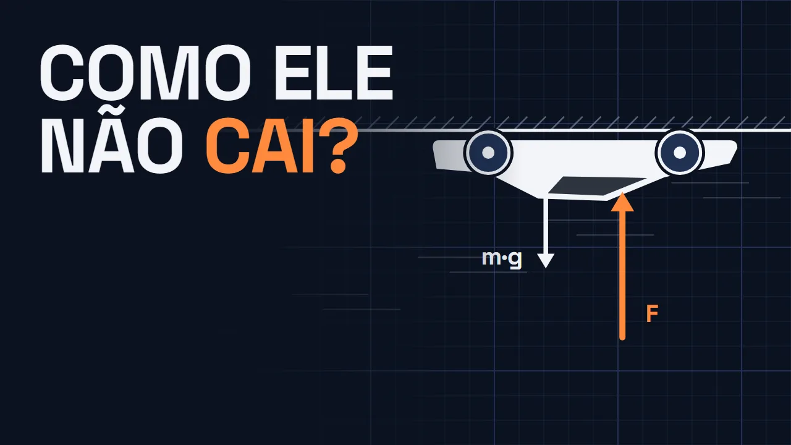
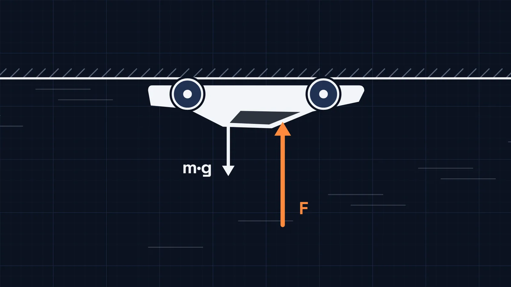
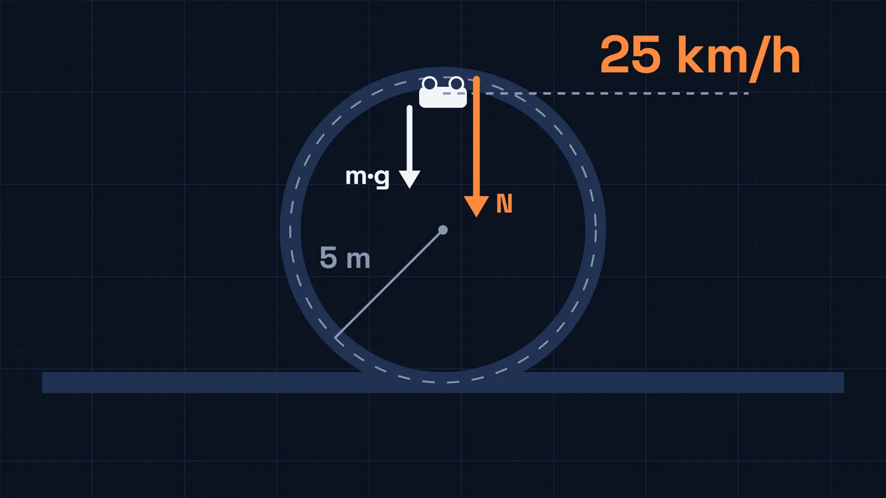
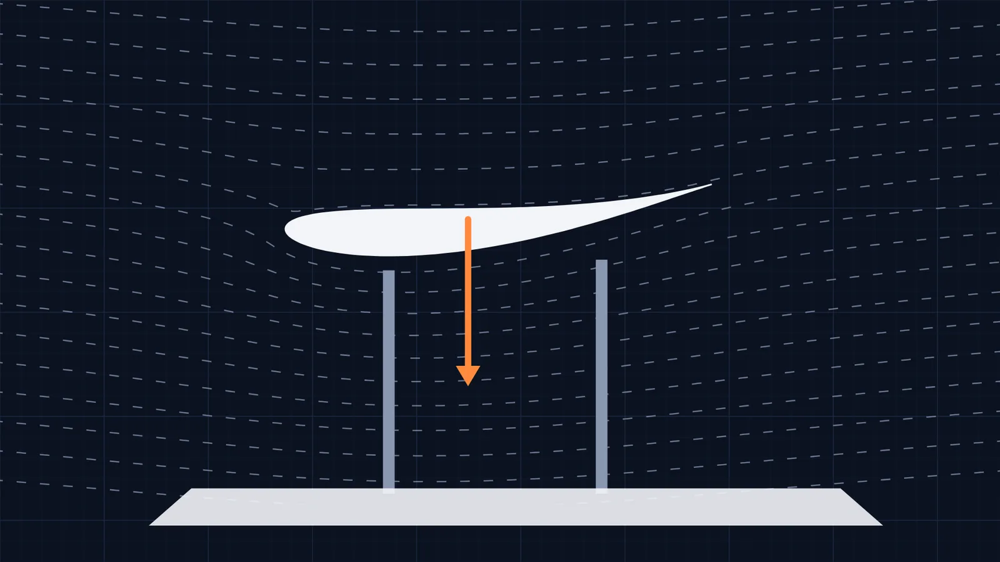
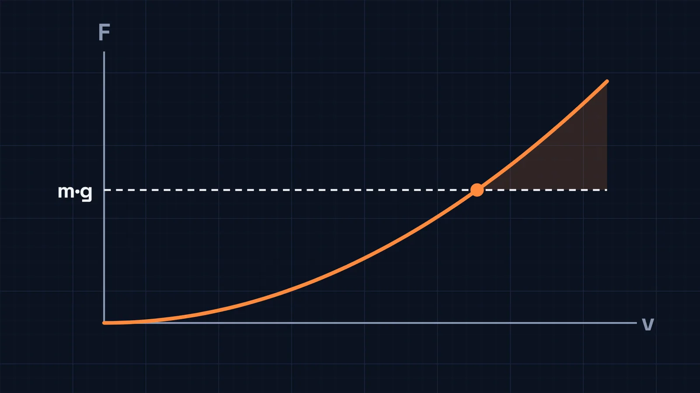
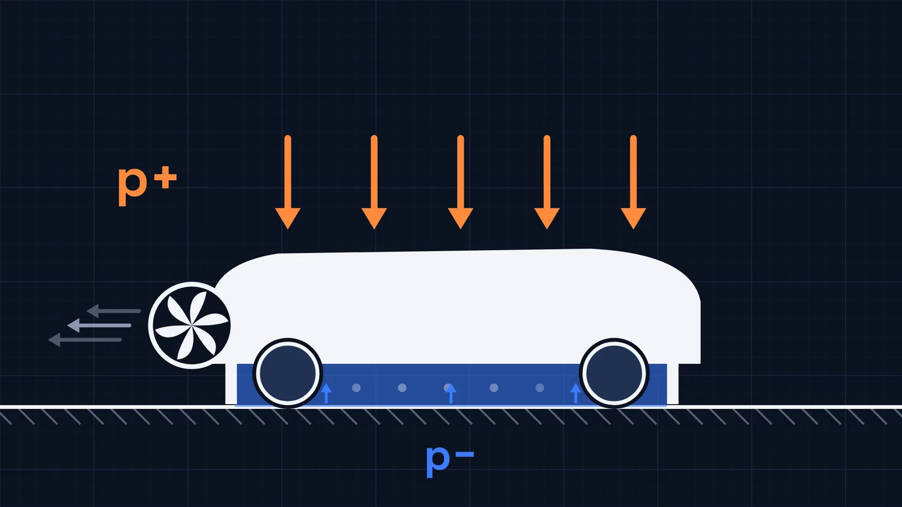
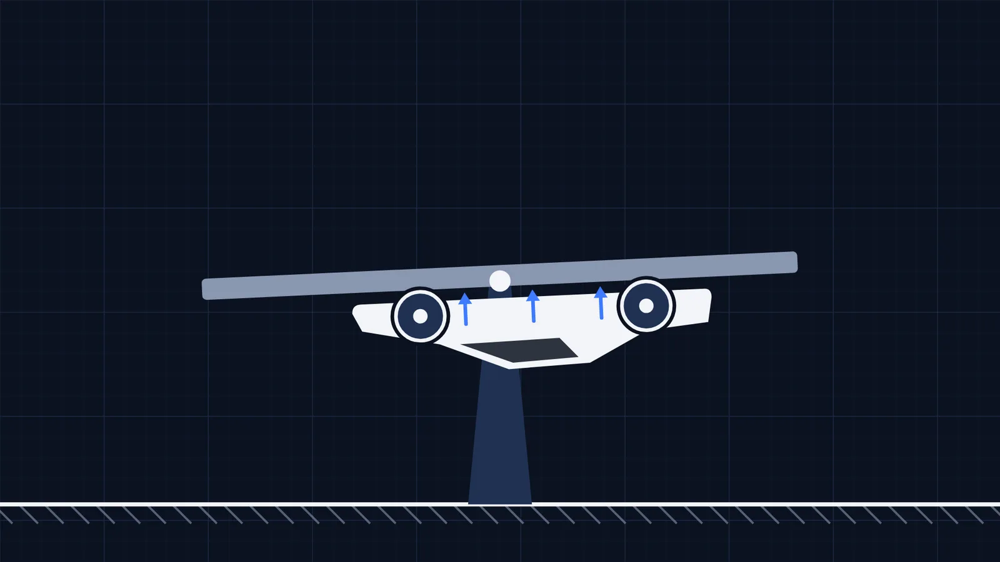
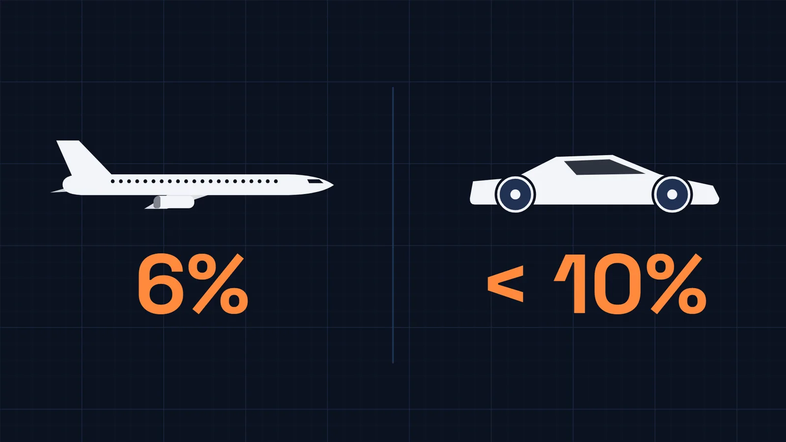
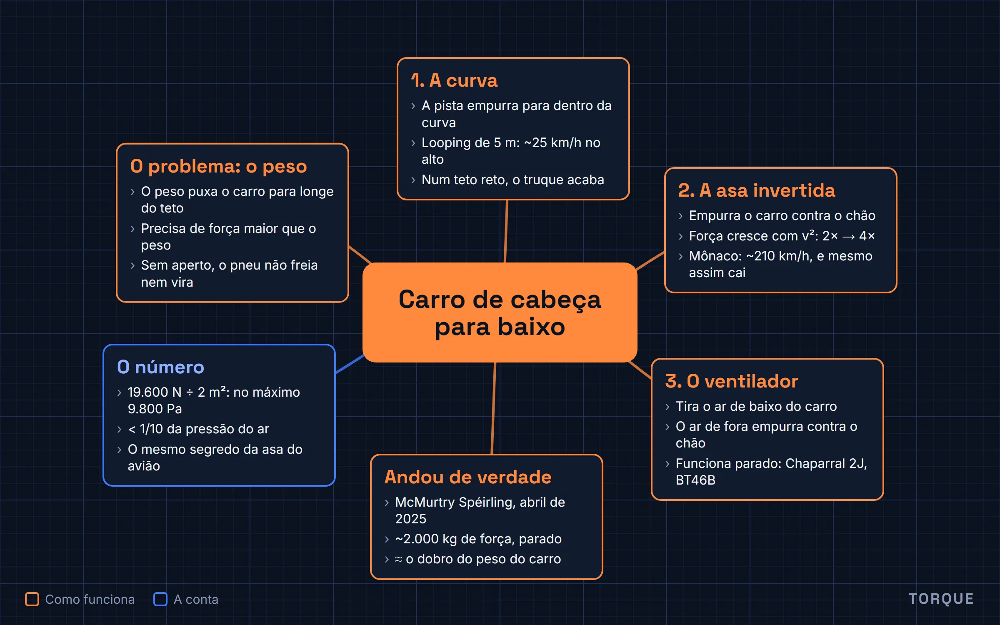

Como um carro anda de cabeça para baixo? Os 3 jeitos que funcionam
O artigo do vídeo de 4 de novembro de 2026, com as figuras e um mapa mental no fim. Leitura de 8 minutos.

O player do YouTube só carrega quando você clica. Abrir no YouTube
Em uma frase: um carro anda de cabeça para baixo quando alguma coisa o empurra contra o teto com uma força maior que o peso, e há três jeitos de conseguir essa força: a curva de um looping, a força para baixo de uma asa invertida em alta velocidade ou um ventilador que tira o ar de baixo do carro e deixa a pressão do ar de fora fazer o resto.
Em outubro de 2026, a Tesla mostrou o novo Roadster de um jeito que ninguém esperava. O carro subiu uma rampa curva, girou, andou de cabeça para baixo, saltou e deu uma pirueta no ar. Parece truque de computador, mas a ideia por trás dele não é nova, e não é mágica. Tem carro de corrida que, em teoria, andaria no teto. E tem carro que já fez isso de verdade, sem precisar de velocidade nenhuma.
O problema é o peso
Um carro de cabeça para baixo tem o peso puxando ele para longe do teto. Para não cair, alguma coisa precisa empurrar o carro contra o teto com uma força maior que o peso.
E não basta empatar. O pneu só consegue tracionar, frear e virar se estiver apertado contra o chão. De cabeça para baixo, o "chão" é o teto. Se a força que aperta o carro contra ele for pequena, o carro até fica, mas não anda.

De onde vem essa força? Existem três respostas.
Primeiro jeito: a curva do looping
A primeira você já viu num brinquedo: o carrinho de pista que passa pelo looping. No alto da volta, o carrinho está de cabeça para baixo, mas está em movimento, e tudo que se move quer seguir reto. A pista curva não deixa: ela empurra o carrinho o tempo todo para dentro da curva. No alto, para dentro da curva é para baixo, e quem faz esse empurrão é a pista.
Se o carrinho estiver rápido o bastante, a curva pede mais força para dentro do que o peso sozinho dá, e a pista completa o resto: ele passa grudado. Se estiver devagar, o peso sozinho já é mais do que a curva pede, e ele despenca.

A velocidade mínima no looping
- Condição no alto da volta
- v² ÷ r ≥ g, ou seja, v ≥ √(g·r)
- Raio
- 5 m
- Velocidade mínima
- √(9,81 × 5) ≈ 7 m/s
≈ 25 km/h
Abaixo disso, o peso pede mais curva do que o looping tem, e o carrinho se solta da pista.
Só que isso funciona enquanto a pista faz curva. Num teto reto, a curva acabou, e o truque também. Para andar num teto plano, o carro precisa de outra força.
Segundo jeito: a asa de cabeça para baixo
No artigo do avião, a gente viu como uma asa funciona: ela curva o ar para baixo, isso cria uma pressão mais baixa em cima e mais alta embaixo, e a asa é empurrada para cima. Vire essa asa ao contrário e prenda num carro. Ela passa a curvar o ar para cima, e o ar empurra a asa, e o carro junto, contra o chão.

Essa força tem nome: downforce, a força para baixo. É ela que deixa um Fórmula 1 fazer curva numa velocidade em que um carro comum sairia da pista. As asas da frente e de trás ajudam, mas boa parte vem do assoalho: o formato de baixo do carro acelera o ar que passa ali, e a pressão embaixo cai.
O detalhe que muda tudo é que essa força cresce com o quadrado da velocidade. Dobre a velocidade, e a força fica quatro vezes maior. A partir de alguma velocidade, a força para baixo de um Fórmula 1 passa do peso dele. Desse ponto em diante, de cabeça para baixo, ele seria empurrado contra o teto com mais força do que o peso o puxa para o chão.

Estudantes de física da Universidade de Leicester fizeram essa conta para o túnel de Mônaco, o mais famoso da Fórmula 1, e chegaram a uns 210 km/h. Outras estimativas variam, de uns 150 a mais de 300 km/h, mas nenhuma é velocidade de cidade.
E aí aparece o problema. Para chegar lá, o carro precisa entrar no teto já rápido. Se frear, a força some, e ele cai. Se a curva do túnel pedir mais aderência do que sobra, ele também cai. Por isso a conclusão dos estudantes é que, no túnel de Mônaco, não daria. Até hoje, nenhum Fórmula 1 andou num teto.
A asa resolve o teto plano, mas cobra um preço alto: só funciona correndo. Para um carro ficar de cabeça para baixo parado, precisa de outra ideia.
Terceiro jeito: o ventilador
Em 1970, um carro de corrida americano, o Chaparral 2J, apareceu na Can-Am com dois ventiladores enormes na traseira, girados por um motor separado, só para isso. Em 1978, a Brabham levou a mesma ideia para a Fórmula 1, com o BT46B.
O truque é este: o carro tem saias que quase encostam no chão e fecham a parte de baixo. Os ventiladores tiram o ar dali de dentro e jogam para trás. Embaixo do carro sobra menos ar, e a pressão cai.
O ventilador não "puxa" o carro para o chão. Quem faz a força é o ar do lado de fora, que continua com a pressão normal e empurra o carro, porque do lado de baixo quase não tem ar empurrando de volta.

E isso não depende da velocidade: o ventilador funciona com o carro parado. O Brabham venceu a primeira corrida que disputou, o GP da Suécia de 1978, com Niki Lauda, e foi retirado logo depois, sob protesto das outras equipes. A ideia ficou décadas guardada, até virar o caminho mais curto para andar no teto.
O carro que andou de cabeça para baixo
Em abril de 2025, a McMurtry, uma fabricante inglesa, fez a demonstração. O Spéirling, um carro elétrico que tira o ar de baixo do assoalho com ventiladores, subiu numa plataforma com o sistema ligado. A plataforma girou até o carro ficar de cabeça para baixo, e o piloto andou um pouco para a frente, invertido, sem nada segurando o carro.

Segundo a empresa, os ventiladores fazem uns 2.000 kg de força para baixo com o carro parado, mais ou menos o dobro do peso do próprio carro. É o mesmo caminho que a Tesla diz ter usado no Roadster: sucção para ficar de cabeça para baixo na rampa, e propulsores de gás frio, parecidos com os que manobram naves no espaço, para saltar e girar no ar.
O número que segura o carro
Agora a conta. São 2.000 kg de força espalhados pela área de baixo do carro, que tem alguns metros quadrados.
Memória de cálculo
- Força para baixo
- 2.000 kg × 9,81 m/s² ≈ 19.600 N
- Área selada sob o carro
- pelo menos 2 m²
- Diferença de pressão
- 19.600 N ÷ 2 m² ≈ 9.800 Pa, no máximo
- Pressão do ar ao nível do mar
- 101.325 Pa
< 10% da pressão do ar
A área do assoalho do Spéirling não foi publicada; 2 m² é um piso conservador. Com uma área maior, a diferença fica ainda menor. 9.800 Pa é a pressão de 1 m de água: o que você sente no ouvido no fundo de uma piscina rasa.
É o mesmo segredo do avião. Lá, 6% de diferença de pressão, espalhados por 120 metros quadrados de asa, seguravam 78 toneladas. Aqui, menos de um décimo, espalhado pelo assoalho, segura um carro inteiro no teto.

O ar ao nosso redor aperta tudo com uma força enorme, o tempo todo. A gente não sente, porque ele aperta igual de todos os lados. Basta tirar um pouco de ar de um lado só, e essa força aparece.
Os três jeitos, e nenhum desliga a gravidade
Correndo numa curva, como no looping. Correndo muito, com uma asa virada ao contrário. Ou, o jeito mais surpreendente, tirando o ar de baixo do carro e deixando a pressão do ar fazer o resto. Nenhum dos três desliga a gravidade: o carro continua pesando o mesmo. Só aparece uma força maior empurrando para o outro lado.
Bônus: o vídeo inteiro num mapa mental
As seis ideias do vídeo numa imagem só, para revisar ou mostrar para alguém.

Fontes
- E. Smith, C. Kirkham e J. Turner, "P1 2 Ceiling It", Physics Special Topics 24(1), 2025 (Universidade de Leicester): a conta do túnel de Mônaco.
- McMurtry Automotive, "Upside-down driving", abril de 2025; cobertura de Motor1, The Engineer e Top Gear: os 2.000 kg de força para baixo com o carro parado.
- Chaparral 2J (Can-Am, 1970) e Brabham BT46 (BT46B, GP da Suécia de 1978), na Wikipédia.
- Lançamento do Tesla Roadster (15/10/2026): cobertura de Top Gear, Interesting Engineering, IBTimes UK e Khaleej Times. Os números de desempenho da Tesla ficam de fora: são alegação da empresa.